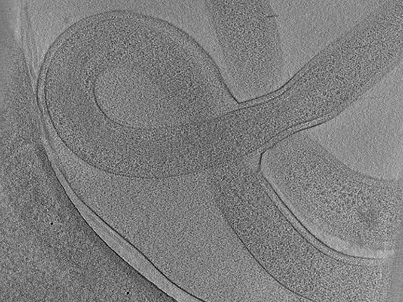

tomogram-datasets

This project is hosted on GitHub.
In the BYU Biophysics research group, we spend much of our time working with 3-dimensional images of bacteria called tomograms. Researchers have spent a lot of time looking for structures in these tomograms, and save their findings in annotation files. tomogram_datasets makes it easier to navigate the web of tomograms and annotations we have, simplifying analysis and dataset creation. While it’s something I’m still working on, I use it every day in my research.
The code is hosted on GitHub.
It puts tomograms and their respective annotations into an object-oriented framework, so that accessing attributes of a particular tomogram, like annotations, supercomputer filepath, or header data, is quick and easy. This is primarily to facilitate the creation and analysis of competition datasets. Our group has already done a couple Kaggle competitions internally at BYU, and as we prepare to launch our first worldwide competition, I found myself in need of an easier way to work with our tomograms.
The project was also an opportunity to practice robust coding practices (implementing unit tests, thorough documentation), scripting (file management on a supercomputer, file loading), as well as data processing.
In addition, I learned a lot about Python libraries making this, like how to define the dependencies of my project so users could install it without having to think about that. I think my favorite part was learning to generate a documentation site automatically from the code’s docstrings using MkDocs. Seeing it update itself as I added features was fascinating.